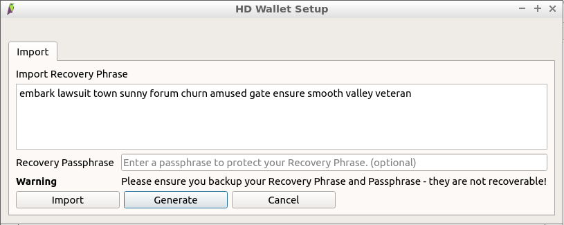
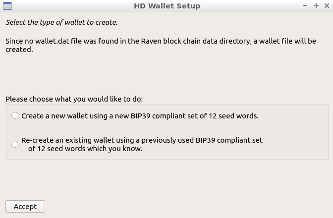
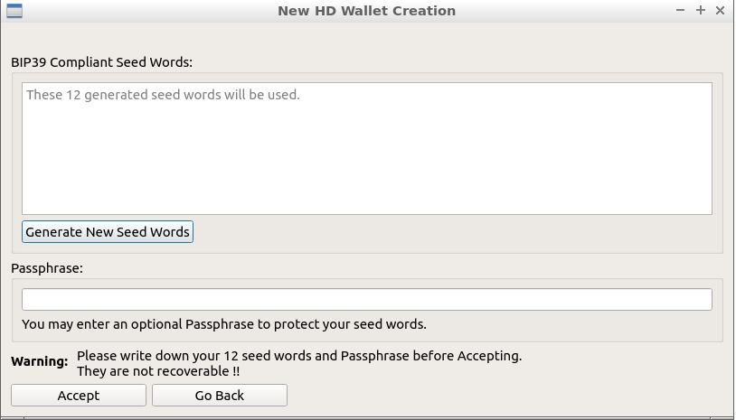
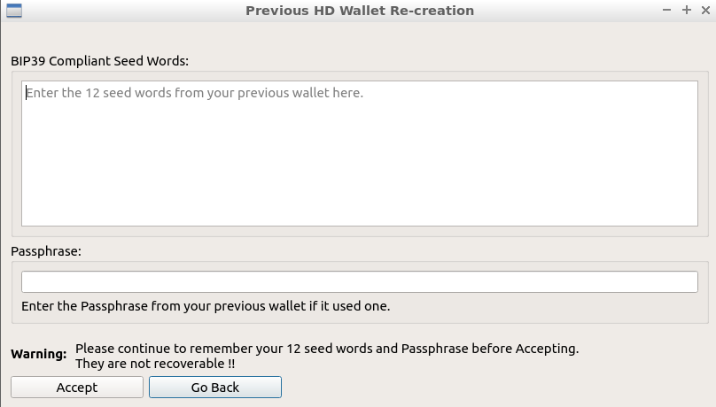

| Hans Schmidt : Nov
24th 2020 |
hans_schm1dt@protonmail.com |
Improving the raven-qt
Mnemonic Dialog
*This document describes changes made on raventoo-qt related to selection of the seed words and passphrase*
*This document describes changes made on raventoo-qt related to selection of the seed words and passphrase*
Background:
This document describes one of the improvements made on raventoo-qt relative to the official ravencoin node software V4.3.1.
When starting that client, if no "wallet.dat" file is found, a dialog window is displayed for the purpose of creating a new wallet. In particular, the dialog is related to the support for BIP-39 compliant DH (Deterministic Hierarchical) wallets which generate their keys from a 12-word seed and an optional user-supplied passphrase.
The user has the choice of either:
- Creating a new wallet by requesting a newly-generated
set of 12 seed words, and optionally supplying a
passphrase, or
- Re-creating a previous wallet from seed words and a passphrase (if previously used) in order to recover lost keys (and thereby coins and assets)
The Problem:
The raven-qt current-version client presents a single dialog GUI window which combines the create/re-create functionality into a single dialog. I find this to be very confusing. Worse still, a poor choice of button selections can result in a wallet being generated from random seed words without the using having the opportunity to record them.
I suspect that new Ravencoin users are equally confused (or worse).
The current raven-qt mnemonic dialog window appears like this:

PS: Don't bother checking- I didn't leave any RVN at these seed words for you to grab :-)
As an exercise to brush up on my C++ and QT coding skills, I decided to take a shot at making some improvements.
The Improvements:
"Another flaw in the human
character is that everybody wants to build and nobody
wants to do maintenance."
-Kurt Vonnegut
-Kurt Vonnegut

The revised GUI in the raventoo-qt client has three separate dialog windows. The first window asks the user which type of wallet they would like to create:

Depending on the user's selection...
either the new wallet creation dialog window appears like this:

or the previous wallet re-creation dialog window appears like this:

The "Go Back" buttons allow the user to study their options before making a decision, and the "Accept" buttons are designed to prevent an invalid action from taking place.
Portability:
These code changes on raventoo-qt are fully compatible with the official Ravencoin core client and can be used to generate a Pull Request if wanted by the community.
Note: I am primarily a Linux user. I did not verify that everything still looks good on an MS-Windows or Mac computer, but the QT gui toolkit is "supposed to" take care of that.
Copyright 2020 by Hans Schmidt